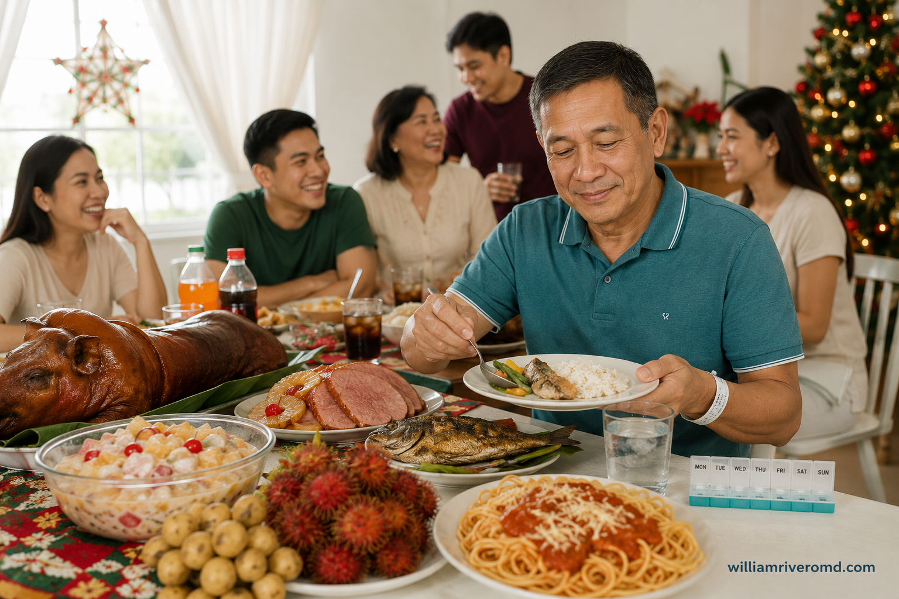
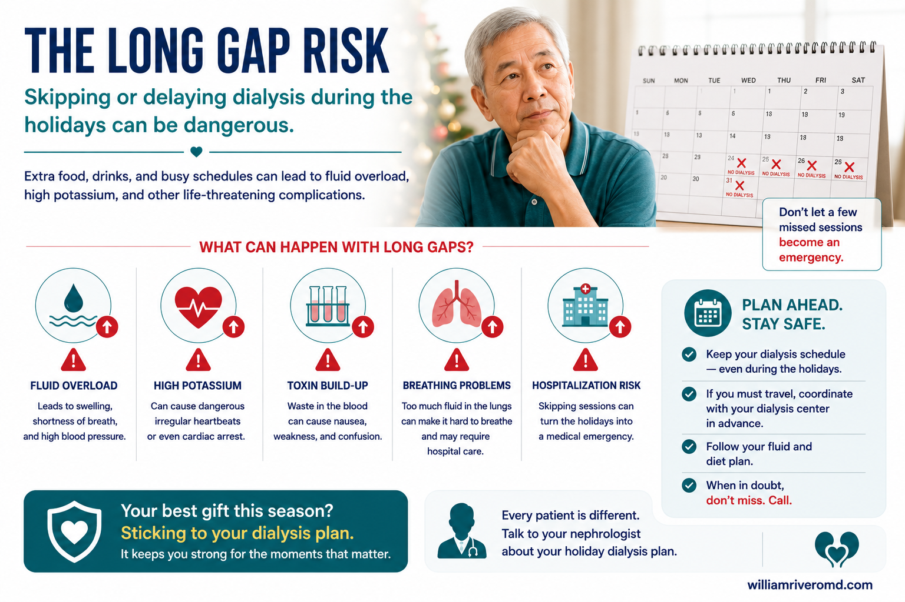
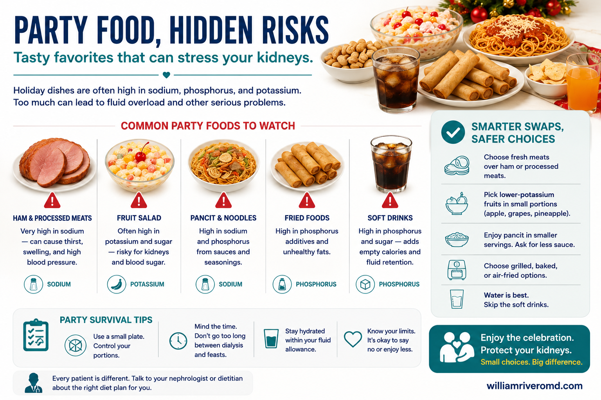
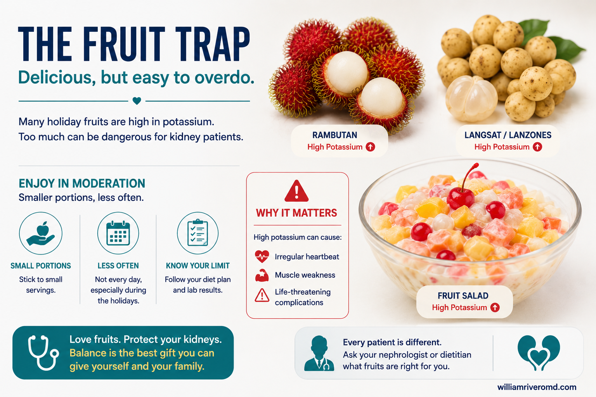
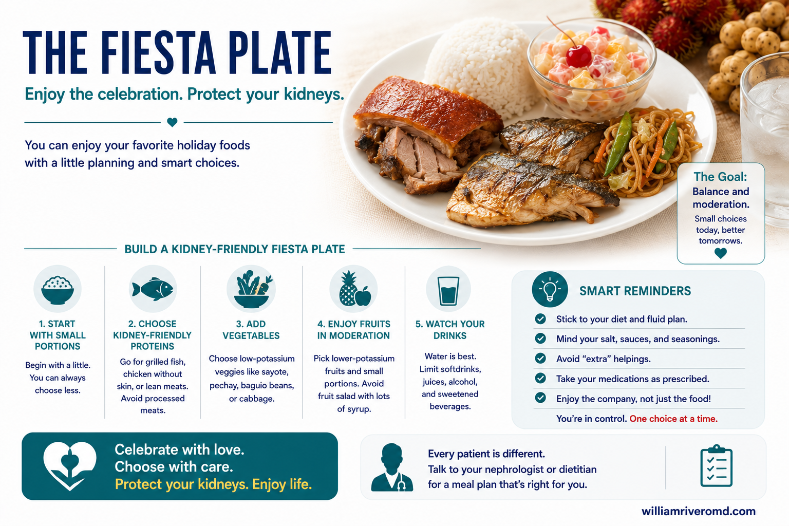
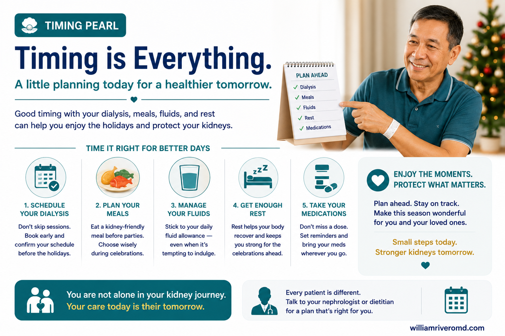
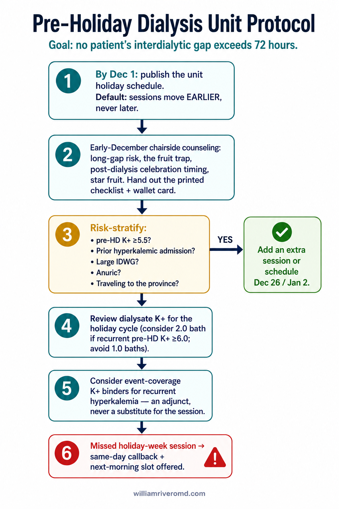

When the Celebration Becomes the EmergencyKapag ang Pagdiriwang ay Nagiging EmergencyKung ang Selebrasyon Mahimong EmergencyNung ing Pagdiriwang Magiging Emergency

The same table that brings the family together can send a kidney patient to the hospital. The difference is not whether you attend the celebration — it is whether you arrive with a plan.Ang mismong mesa na nagbubuklod sa pamilya ay maaaring magpadala sa pasyenteng may sakit sa bato sa ospital. Ang pagkakaiba ay hindi kung dadalo kayo sa pagdiriwang — kundi kung darating kayo nang may plano.Ang mao ra nga lamesa nga nagahiusa sa pamilya mahimong magpadala sa pasyente nga adunay sakit sa kidney ngadto sa ospital. Ang kalainan dili kung motambong ka sa selebrasyon — kondili kung moabot ka nga adunay plano.Ing mismung lamesa a magbuklod king pamilya malyari yang magpadala king pasyenteng may sakit king batu king ospital. Ing pamiyaliwa ali nung dakit kayu king pagdiriwang — nune nung datang kayung atin planu.
Doctors have long recognized "holiday heart syndrome" — dangerous heart-rhythm problems that appear in otherwise healthy people after heavy holiday drinking. We see a parallel pattern in kidney patients so consistently that we have given it a name: "Holiday Kidney Syndrome" — the cluster of high-potassium food, salty dishes, extra fluid, alcohol, missed medicines, and skipped or delayed dialysis sessions that sends CKD and dialysis patients to the hospital during Christmas, New Year, fiestas, reunions, and team buildings. This is a teaching term we use in our practice, not yet an official medical diagnosis — but the danger it describes is very real and very well documented.Matagal nang kilala ng mga doktor ang "holiday heart syndrome" — mga mapanganib na problema sa ritmo ng puso na lumilitaw sa mga taong malusog naman pagkatapos ng matinding inuman tuwing kapaskuhan. Nakikita namin ang katulad na pangyayari sa mga pasyenteng may sakit sa bato nang paulit-ulit kaya binigyan namin ito ng pangalan: "Holiday Kidney Syndrome" — ang kombinasyon ng pagkaing mataas sa potassium, maaalat na ulam, sobrang likido, alak, nakalimutang gamot, at nilaktawan o naantalang sesyon ng diyalisis na nagpapadala sa mga pasyenteng may CKD at diyalisis sa ospital tuwing Pasko, Bagong Taon, pista, reunion, at team building. Ito ay terminong pang-turo na ginagamit namin sa aming klinika, hindi pa opisyal na medikal na diagnosis — ngunit ang panganib na inilalarawan nito ay totoong-totoo at napakahusay na nadokumento.Dugay nang nailhan sa mga doktor ang "holiday heart syndrome" — delikado nga mga problema sa ritmo sa kasingkasing nga makita sa mga tawong himsog human sa grabe nga inuman sa panahon sa Pasko. Nakita namo ang susama nga sumbanan sa mga pasyente nga adunay sakit sa kidney nga balik-balik mao nga gihatagan namo kini og ngalan: "Holiday Kidney Syndrome" — ang kombinasyon sa pagkaon nga taas sa potassium, parat nga mga sud-an, sobra nga tubig, alkohol, nakalimtan nga tambal, ug gilaktawan o nalangan nga sesyon sa dialysis nga nagpadala sa mga pasyente nga adunay CKD ug dialysis ngadto sa ospital sa panahon sa Pasko, Bag-ong Tuig, pista, reunion, ug team building. Kini usa ka termino sa pagtudlo nga gigamit namo sa among klinika, dili pa opisyal nga medikal nga diagnosis — apan ang peligro nga gihulagway niini tinuod kaayo ug maayo kaayo nga nadokumento.Makaba nang balu da reng doktor ing "holiday heart syndrome" — deng mapanganib a problema king ritmo ning pusu a lulto kareng taung malusug naman kaibat ning masyadung inuman neng kapaskuhan. Akakit mi ing kapareung pangyayari kareng pasyenteng may sakit king batu nang pauli-uli kaya dininan mi yang lagyu: "Holiday Kidney Syndrome" — ing kombinasyon ning pamangang matas king potassium, maalat a ulam, sobrang likido, alak, nakalimutang gamut, at nilaktawan o naantalang sesyon ning diyalisis a magpadala kareng pasyenteng may CKD at diyalisis king ospital neng Pasku, Bayung Banua, pista, reunion, at team building. Iti terminu yang pang-turu a gagamitan mi king kekaming klinika, ali ya pang opisyal a medikal a diagnosis — ngarud ing panganib a ilalarawan na tutu ya at masanting yang makadokumento.
A true story from our practiceIsang tunay na kwento mula sa aming klinikaUsa ka tinuod nga istorya gikan sa among klinikaMetung a tutung kwentu ibat king kekaming klinika
A dialysis patient attended a family gathering where rambutan and lanzones were piled on the table — in season, sweet, and "just fruit." Grazing through the afternoon, the patient ate far more than anyone realized. That night came chest heaviness and a racing, irregular heartbeat. At the emergency room, the potassium level was 10 mmol/L — roughly double the safe limit — with a dangerous cardiac dysrhythmia already underway. Emergency dialysis saved this patient. Many others in the same situation never reach the hospital in time. Nothing on that table was "bad food." It was ordinary fruit, in an extraordinary amount, on the wrong day.Isang pasyenteng naka-diyalisis ang dumalo sa isang family gathering kung saan nakatambak sa mesa ang rambutan at lanzones — nasa panahon, matamis, at "prutas lang naman." Sa buong hapon ng paminsan-minsang pagkain, mas marami pala ang nakain ng pasyente kaysa inaakala ninuman. Kinagabihan, sumakit nang mabigat ang dibdib at bumilis at naging hindi regular ang tibok ng puso. Sa emergency room, ang potassium ay 10 mmol/L — halos doble ng ligtas na antas — at may mapanganib nang dysrhythmia ang puso. Nailigtas ang pasyenteng ito ng emergency dialysis. Maraming iba sa parehong sitwasyon ang hindi na umaabot sa ospital. Walang "masamang pagkain" sa mesang iyon. Ordinaryong prutas iyon, sa hindi ordinaryong dami, sa maling araw.Usa ka pasyente nga naka-dialysis mitambong sa usa ka family gathering diin nagtapok sa lamesa ang rambutan ug lanzones — anaa sa panahon, tam-is, ug "prutas ra man." Sa tibuok hapon nga sige og kaon, mas daghan diay ang nakaon sa pasyente kaysa gihunahuna ni bisan kinsa. Pagkagabii, mibug-at ang dughan ug mikusog ug nag-iregular ang pitik sa kasingkasing. Sa emergency room, ang potassium 10 mmol/L — hapit doble sa luwas nga lebel — ug aduna nay delikado nga dysrhythmia ang kasingkasing. Naluwas kini nga pasyente sa emergency dialysis. Daghan pa sa susama nga sitwasyon ang dili na makaabot sa ospital. Walay "daotan nga pagkaon" sa maong lamesa. Ordinaryo kadto nga prutas, sa dili ordinaryo nga gidaghanon, sa sayop nga adlaw.Metung a pasyenteng maka-diyalisis ing dinakit king metung a family gathering nung nu makatambak king lamesa ing rambutan at lanzones — atyu king panahon, mayumu, at "prutas ya mu naman." Kilub ning mapilan oras a pamangan, dakal ya palang mekakan ing pasyente kesa king inisip da. Kinabengi, binayat ya ing salu at migmasyas at ali regular ing tibuk ning pusu. King emergency room, ing potassium 10 mmol/L ya — halus doble ning ligtas a antas — at atin nang mapanganib a dysrhythmia ing pusu. Niligtas ya ing pasyenteng ini ning emergency dialysis. Dakal a aliwa king kapareung sitwasyon ing ali na miras king ospital. Alang "marok a pamangan" king lamesang ita. Ordinaryung prutas ya ita, king ali ordinaryung dakal, king maling aldo.
The feastAng handaanAng kombiraIng handaan
Holiday tables concentrate everything a failing kidney cannot handle: potassium (fruits, fruit salad, root crops, sauces), sodium (ham, lechon, processed meats, sauces), phosphorus (cheese, organ meats, softdrinks), and fluid (soups, drinks, halo-halo, ice).Pinagsasama-sama ng mga handaan ang lahat ng hindi kayang itapon ng mahinang bato: potassium (prutas, fruit salad, gulay na ugat, sarsa), sodium (hamon, lechon, processed meat, sarsa), phosphorus (keso, lamang-loob, softdrinks), at likido (sabaw, inumin, halo-halo, yelo).Gitapok sa mga kombira ang tanan nga dili kayang ilabay sa huyang nga kidney: potassium (prutas, fruit salad, lagutmon, sarsa), sodium (hamon, lechon, processed meat, sarsa), phosphorus (keso, lamang-loob, softdrinks), ug tubig (sabaw, ilimnon, halo-halo, yelo).Pisasamut-samut da reng handaan ing eganagana a ali ayagyu ning mainang batu: potassium (prutas, fruit salad, lagutmun, sarsa), sodium (hamon, lechon, processed meat, sarsa), phosphorus (keso, lamang-loob, softdrinks), at likido (sabo, inuman, halo-halo, yelu).
The stretched dialysis gapAng pinahabang pagitan ng diyalisisAng gipalugway nga gintang sa dialysisIng pepahabang pilatan ning diyalisis
Units close on holidays, patients travel to the province, sessions get "moved to next week." Every extra day without dialysis means potassium and fluid keep rising with no exit. The load from the feast lands exactly when the body has no way to remove it.Nagsasara ang mga unit tuwing holiday, umuuwi sa probinsya ang mga pasyente, at "inililipat sa susunod na linggo" ang mga sesyon. Bawat dagdag na araw na walang diyalisis, patuloy na tumataas ang potassium at likido nang walang labasan. Dumarating ang bigat ng handaan sa mismong panahong walang paraan ang katawan para alisin ito.Magsira ang mga unit sa holiday, mopauli sa probinsya ang mga pasyente, ug "ibalhin sa sunod semana" ang mga sesyon. Matag dugang adlaw nga walay dialysis, padayon nga mosaka ang potassium ug tubig nga walay gawasan. Moabot ang kabug-at sa kombira sa mismong panahon nga walay paagi ang lawas sa pagtangtang niini.Magsara la reng unit neng holiday, muli la king probinsya deng pasyente, at "yalilan da king tutuking duminggu" deng sesyon. Balang dagdag a aldong alang diyalisis, tutuloy yang tataas ing potassium at likido nang alang labasan. Daratang ing bayat ning handaan king mismung panahon a alang paralan ing katawan bang ilako ya.
The celebration extrasAng mga dagdag ng pagdiriwangAng mga dugang sa selebrasyonDeng dagdag ning pagdiriwang
Alcohol, late nights, forgotten phosphate binders and BP medicines left at home, then pain relievers (NSAIDs) for the headache the next day — each one multiplies the danger of the first two.Alak, puyat, nakalimutang phosphate binder at gamot sa presyon na naiwan sa bahay, tapos pain reliever (NSAID) para sa sakit ng ulo kinabukasan — bawat isa ay nagpapalala sa panganib ng unang dalawa.Alkohol, puyat, nakalimtan nga phosphate binder ug tambal sa presyon nga nabilin sa balay, dayon pain reliever (NSAID) alang sa labad sa ulo pagkaugma — matag usa nagpadako sa peligro sa unang duha.Alak, puyat, nakalimutang phosphate binder at gamut king presyon a milakwan king bale, kaibat pain reliever (NSAID) para king sakit buntuk kabukasan — balang metung papalalan ne ing panganib ning mumunang adwa.
The Most Dangerous 72 Hours of the YearAng Pinakadelikadong 72 Oras ng TaonAng Pinaka-delikado nga 72 Oras sa TuigIng Pekadelikadung 72 Oras ning Banua
If you are on hemodialysis three times a week, your schedule already contains one "long gap" — two days without treatment (for example, Saturday to Tuesday for a Tue–Thu–Sat patient). Large studies of tens of thousands of dialysis patients show that the day after this long gap is the single most dangerous day of the week: deaths, heart attacks, heart-failure admissions, and dangerous heart rhythms all rise sharply — admissions for heart-rhythm problems nearly double. Now consider what happens at Christmas: the unit closes, a session is skipped, the gap stretches from two days to three or four — and that stretched gap lands on top of the biggest meals of the year.Kung kayo ay naka-hemodialysis tatlong beses sa isang linggo, ang inyong iskedyul ay may isang "mahabang pagitan" — dalawang araw na walang treatment (halimbawa, Sabado hanggang Martes para sa pasyenteng Martes–Huwebes–Sabado). Ipinapakita ng malalaking pag-aaral sa libu-libong pasyenteng naka-diyalisis na ang araw pagkatapos ng mahabang pagitan na ito ang pinakadelikadong araw ng linggo: tumataas nang matindi ang mga pagkamatay, atake sa puso, pagka-admit dahil sa heart failure, at mapanganib na ritmo ng puso — ang pagka-admit dahil sa problema sa ritmo ng puso ay halos dumodoble. Ngayon isipin ang nangyayari tuwing Pasko: nagsasara ang unit, nalalaktawan ang sesyon, humahaba ang pagitan mula dalawang araw patungong tatlo o apat — at ang pinahabang pagitan na iyon ay tumatama sa mismong pinakamalalaking kainan ng taon.Kung naka-hemodialysis ka tulo ka beses sa usa ka semana, ang imong iskedyul aduna nay usa ka "taas nga gintang" — duha ka adlaw nga walay treatment (pananglitan, Sabado hangtod Martes alang sa pasyente nga Martes–Huwebes–Sabado). Gipakita sa dagkong mga pagtuon sa liboan ka mga pasyente sa dialysis nga ang adlaw human niining taas nga gintang mao ang pinaka-delikado nga adlaw sa semana: mosaka pag-ayo ang mga kamatayon, atake sa kasingkasing, pag-admit tungod sa heart failure, ug delikado nga ritmo sa kasingkasing — ang pag-admit tungod sa problema sa ritmo hapit magdoble. Karon hunahunaa ang mahitabo sa Pasko: magsira ang unit, malaktawan ang sesyon, molugway ang gintang gikan sa duha ka adlaw ngadto sa tulo o upat — ug kanang gipalugway nga gintang motugpa ibabaw sa pinakadagko nga mga pagkaon sa tuig.Nung maka-hemodialysis kayu atlung besis king metung a duminggu, ing kekayung iskedyul atin nang metung a "makabang pilatan" — adwang aldong alang treatment (alimbawa, Sabadu angga king Martes para king pasyenteng Martes–Huwebes–Sabadu). Pakit da reng maragul a pag-aral kareng libu-libung pasyenteng maka-diyalisis a ing aldo kaibat ning makabang pilatan a ini ya ing pekadelikadung aldo ning duminggu: tataas lang masyadu deng kamatayan, atake king pusu, pamag-admit uli ning heart failure, at mapanganib a ritmo ning pusu — ing pamag-admit uli ning problema king ritmo halus dudoble ya. Ngeni isipan ye ing mararapat neng Pasku: magsara ya ing unit, milalaktawan ya ing sesyon, lalaba ya ing pilatan manibat adwang aldo papuntang atlu o apat — at itang pepahabang pilatan tatama ya king mismung pekamaragul a pamangan ning banua.

Skipping or delaying dialysis during the holidays lets fluid, potassium, and toxins build up with no exit. Don’t let a few missed sessions become an emergency — plan ahead and stay safe.Ang paglaktaw o pagpapaliban ng diyalisis tuwing kapaskuhan ay nagpapaipon ng likido, potassium, at lason nang walang labasan. Huwag hayaang maging emergency ang ilang nilaktawang sesyon — magplano nang maaga at manatiling ligtas.Ang paglaktaw o paglangan sa dialysis sa panahon sa pasko magpatigom sa tubig, potassium, ug hilo nga walay gawasan. Ayaw tugoti nga mahimong emergency ang pipila ka nalaktawan nga sesyon — pagplano nang daan ug magpabiling luwas.Ing pamaglaktaw o pamagpaliban ning diyalisis neng kapaskuhan papaipunan na ing likido, potassium, at lasun nang alang labasan. Eyu paburen a maging emergency deng mapilan a nilaktawang sesyon — magplanu kayung maaga at manatiling ligtas.
There is no such thing as a "cheat day" in kidney failureWalang tinatawag na "cheat day" sa kidney failureWalay gitawag nga "cheat day" sa kidney failureAlang ausan a "cheat day" king kidney failure
A healthy person's kidneys quietly clean up after a feast within hours. Yours cannot. What you eat at the party does not disappear — it waits in your blood until your next dialysis session. There are no cheat days; there are only portions you planned and portions you will regret. The good news: with planning, you can eat at every celebration — this entire guide is the plan.Ang bato ng malusog na tao ay tahimik na naglilinis pagkatapos ng handaan sa loob ng ilang oras. Ang sa inyo ay hindi. Ang kinain ninyo sa handaan ay hindi nawawala — naghihintay ito sa inyong dugo hanggang sa susunod ninyong sesyon ng diyalisis. Walang cheat day; mayroon lamang mga porsyong pinlano ninyo at mga porsyong pagsisisihan ninyo. Ang magandang balita: sa tamang plano, makakakain kayo sa bawat pagdiriwang — ang buong gabay na ito ang plano.Ang kidney sa himsog nga tawo hilom nga manglimpyo human sa kombira sulod sa pipila ka oras. Ang imo dili. Ang imong gikaon sa kombira dili mawala — maghulat kini sa imong dugo hangtod sa imong sunod nga sesyon sa dialysis. Walay cheat day; aduna lamang mga porsyon nga imong giplano ug mga porsyon nga imong pagabasulan. Ang maayong balita: sa hustong plano, makakaon ka sa matag selebrasyon — kining tibuok giya mao ang plano.Ing batu ning malusug a tau tahimik yang maglinis kaibat ning handaan kilub ning mapilan oras. Ing keka ali. Ing pengan yu king handaan ali ya mawawala — maghintay ya king kekayung daya angga king tutuking sesyon ning diyalisis. Alang cheat day; atin mung porsyon a pinlanu yu at porsyon a pagsisyan yu. Ing masanting a balita: king ustung planu, makakan kayu king balang pagdiriwang — ing mabilug a gabay a ini ya ing planu.
Party Food Traffic Light — Filipino Celebration DishesTraffic Light ng Pagkain sa Handaan — Mga Putaheng PampistaTraffic Light sa Pagkaon sa Kombira — Mga Putahe sa PistaTraffic Light ning Pamangan king Handaan — Deng Putaheng Pampista
These are general rules for most CKD and dialysis patients. Your own dietitian's advice — based on your latest potassium and phosphorus levels — always overrides this table.Ito ay pangkalahatang tuntunin para sa karamihan ng mga pasyenteng may CKD at diyalisis. Ang payo ng inyong sariling dietitian — batay sa inyong pinakabagong potassium at phosphorus — ang laging mas matimbang kaysa sa talahanayang ito.Kini mga pangkinatibuk-ang lagda alang sa kadaghanan sa mga pasyente nga adunay CKD ug dialysis. Ang tambag sa imong kaugalingong dietitian — base sa imong pinakabag-o nga potassium ug phosphorus — mao kanunay ang mas labaw niining lamesa.Deni pangkalahatang tuntunin la para king karamihan da reng pasyenteng may CKD at diyalisis. Ing payu ning kekayung sariling dietitian — batay king kekayung pekabayung potassium at phosphorus — ya ing pirming mas matimbang kesa king talahanayang ini.

The hidden risks on the party table: salt in ham and noodles, potassium in fruit salad, phosphorus in fried food and soft drinks — and the smarter swaps that let you still enjoy the meal.Ang mga tagong panganib sa mesa ng handaan: asin sa hamon at pancit, potassium sa fruit salad, phosphorus sa piniritong pagkain at softdrinks — at ang mas matalinong pamalit para masiyahan pa rin sa kainan.Ang tinago nga mga peligro sa lamesa sa kombira: asin sa hamon ug pancit, potassium sa fruit salad, phosphorus sa prito nga pagkaon ug softdrinks — ug ang mas maalamon nga mga puli aron malingaw gihapon sa pagkaon.Deng makasalikut a panganib king lamesa ning handaan: asin king hamon at pancit, potassium king fruit salad, phosphorus king piniritung pamangan at softdrinks — at deng mas matalinung kapalit bang masaya pa murin king pamangan.
🟢 SAFER CHOICES — enjoy in normal portionsMAS LIGTAS — kainin sa normal na porsyonMAS LUWAS — kan-a sa normal nga porsyonMAS LIGTAS — kanan king normal a porsyon
- Steamed white rice — your safest base; fill from here firstKanin — pinakaligtas na pagkain; dito muna magpunoKan-on — pinakaluwas nga pagkaon; dinhi una magpunoNasi — pekaligtas a pamangan; keni muna magpunu
- Inihaw na isda / grilled fish — skip heavy marinades and toyo-calamansi dipsInihaw na isda — iwasan ang maraming marinade at sawsawang toyo-calamansiSinugbang isda — likayi ang daghang marinade ug sawsawan nga toyo-calamansiDinaing a asan — iwasan ing dakal a marinade at sawsawang toyu-kalamansi
- Grilled or roasted chicken, skin removed — plain inasal-style without the basting sauceInihaw o litsong manok, alis ang balat — plain na inasal, walang sarsaSinugba o litson nga manok, kuhaa ang panit — plain nga inasal, walay sarsaDinaing o litsong manuk, lako ya ing balat — plain a inasal, alang sarsa
- Lumpiang sariwa (fresh) — go light on the sweet garlic sauce and skip the crushed peanutsLumpiang sariwa — konting sarsa lang at huwag ang dinurog na maniLumpiang sariwa — gamay ra nga sarsa ug ayaw ang dinugmok nga maniLumpiang sariwa — ditak mung sarsa at ali ing dinurug a mani
- Puto, kutsinta (plain, no cheese topping) — rice-based kakanin are among the safer dessertsPuto, kutsinta (plain, walang keso) — ang kakaning gawa sa bigas ay kabilang sa mas ligtas na panghimagasPuto, kutsinta (plain, walay keso) — ang kakanin nga hinimo sa bugas usa sa mas luwas nga panghimagasPutu, kutsinta (plain, alang keso) — deng kakaning gawa king abias kayabe la kareng mas ligtas a panghimagas
- Pancit bihon (small plate) — ask the cook to go easy on soy sauce; one fist-sized servingPancit bihon (maliit na plato) — pakiusapan ang nagluto na bawasan ang toyo; isang porsyong kasinglaki ng kamaoPancit bihon (gamay nga plato) — hangyoa ang kusinero nga kunhoran ang toyo; usa ka porsyon nga sama kadako sa kinumoPancit bihon (malating piatu) — pakisabian ye ing minangkok a bawasan ne ing toyu; metung a porsyong kasindagul ning gemgem
🟡 SMALL TASTE ONLY — 2–3 bites, onceTIKIM LANG — 2–3 subo, isang besesTILAW RA — 2–3 ka hungit, kausaTIKMAN MU — 2–3 subu, misan mu
- Lechon — small piece of lean meat; leave the skin and the liver sauceLechon — maliit na piraso ng laman; iwanan ang balat at sarsaLechon — gamay nga piraso sa unod; biyai ang panit ug sarsaLechon — malating pirasu ning laman; lakwan ye ing balat at sarsa
- Christmas ham (hamonado) & keso de bola — very high salt and phosphorus; a thin slice of each at mostHamon at keso de bola — napakataas sa asin at phosphorus; isang manipis na hiwa lang ng bawat isaHamon ug keso de bola — taas kaayo sa asin ug phosphorus; usa ka nipis nga hiwa ra matag usaHamon at keso de bola — matas a matas king asin at phosphorus; metung a impis a hiwang balang metung
- Filipino spaghetti, embutido, hotdog on sticks — processed meat and cheese mean sodium plus hidden phosphorusFilipino spaghetti, embutido, hotdog — ang processed meat at keso ay sodium at tagong phosphorusFilipino spaghetti, embutido, hotdog — ang processed meat ug keso nagpasabot og sodium ug tinago nga phosphorusFilipino spaghetti, embutido, hotdog — ing processed meat at keso sodium la at makasalikut a phosphorus
- Fruit salad / buko salad — condensed milk + cream + fruits = potassium, phosphorus, sugar, and fluid in one cup. Two spoonfuls, not a bowlFruit salad / buko salad — condensed milk + cream + prutas = potassium, phosphorus, asukal, at likido sa isang tasa. Dalawang kutsara, hindi isang mangkokFruit salad / buko salad — condensed milk + cream + prutas = potassium, phosphorus, asukar, ug tubig sa usa ka tasa. Duha ka kutsara, dili usa ka panaksanFruit salad / buko salad — condensed milk + cream + prutas = potassium, phosphorus, asukal, at likido king metung a tasa. Adwang kutsara, ali metung a mangkok
- Bibingka & puto bumbong — the rice cake itself is fine; the salted egg, cheese, and grated coconut on top are the problem. Ask for it plainBibingka at puto bumbong — okay ang kakanin mismo; ang itlog na maalat, keso, at niyog sa ibabaw ang problema. Hingin itong plainBibingka ug puto bumbong — okay ang kakanin mismo; ang itlog nga parat, keso, ug lubi sa ibabaw mao ang problema. Pangayoa kini nga plainBibingka at putu bumbong — ayus ya ing kakanin mismu; ing ebun a maalat, keso, at ngungut king babo ila ing problema. Awad ye iting plain
- Leche flan — egg yolks and condensed milk carry phosphorus; one thin sliceLeche flan — may phosphorus ang pula ng itlog at condensed milk; isang manipis na hiwaLeche flan — adunay phosphorus ang pula sa itlog ug condensed milk; usa ka nipis nga hiwaLeche flan — atin yang phosphorus ing mula ning ebun at condensed milk; metung a impis a hiwa
🔴 SKIP THESE — the highest-risk party dishesIWASAN — ang pinaka-delikadong putahe sa handaanLIKAYI — ang pinaka-delikado nga putahe sa kombiraIWASAN — deng pekadelikadung putahe king handaan
- Dinuguan — blood is one of the most concentrated potassium and phosphorus sources on any tableDinuguan — ang dugo ay isa sa pinakamataas na pinagmumulan ng potassium at phosphorus sa anumang mesaDinuguan — ang dugo usa sa pinakataas nga tinubdan sa potassium ug phosphorus sa bisan unsang lamesaTidtad (dinuguan) — ing daya ya ing metung kareng pekamatas a penibatan ning potassium at phosphorus king nanumang lamesa
- Kare-kare with bagoong — peanut sauce is potassium-rich; bagoong is one of the saltiest foods that existsKare-kare na may bagoong — mataas sa potassium ang sarsang mani; ang bagoong ay isa sa pinakamaalat na pagkainKare-kare nga adunay bagoong — taas sa potassium ang sarsa nga mani; ang bagoong usa sa pinakaparat nga pagkaonKare-kare a atin bagoong — matas king potassium ing sarsang mani; ing bagoong ya ing metung kareng pekamaalat a pamangan
- Sisig, chicharon, crispy pata — organ meats, deep-fried skin: phosphorus, sodium, and fat togetherSisig, chicharon, crispy pata — lamang-loob at piniritong balat: sabay-sabay ang phosphorus, sodium, at tabaSisig, chicharon, crispy pata — lamang-loob ug giprito nga panit: dungan ang phosphorus, sodium, ug tambokSisig, chicharon, crispy pata — lamang-loob at piniritung balat: pisan la ing phosphorus, sodium, at taba
- Itlog na maalat (salted egg) — extreme sodium in a small packageItlog na maalat — sobrang sodium sa maliit na paketeItlog nga parat — grabe nga sodium sa gamay nga putosEbun a maalat — sobrang sodium king malating pakete
- Salty chips, mixed nuts, cornick — the "harmless" grazing bowls beside the karaoke are potassium + sodium + phosphorus you never countChips, mani, cornick — ang mga "harmless" na pampulutan sa tabi ng videoke ay potassium + sodium + phosphorus na hindi ninyo nabibilangChips, mani, cornick — ang mga "harmless" nga sumsuman tupad sa videoke potassium + sodium + phosphorus nga wala nimo maihapChips, mani, cornick — deng "harmless" a pulutan king siping ning videoke potassium + sodium + phosphorus lang ali yu abibilang
- Gravy, instant sauces, all-day sabaw pots (bulalo, nilaga) — salt plus fluid; broth counts entirely against your fluid limitGravy, instant na sarsa, buong-araw na sabaw (bulalo, nilaga) — asin at likido; ang sabaw ay buong binibilang sa inyong fluid limitGravy, instant nga sarsa, tibuok-adlaw nga sabaw (bulalo, nilaga) — asin ug tubig; ang sabaw bug-os nga maihap batok sa imong fluid limitGravy, instant a sarsa, mabilug-aldong sabo (bulalo, nilaga) — asin at likido; ing sabo mabilug yang mabibilang king kekayung fluid limit
The Fruit Trap: "It's Just Fruit" Is How It StartsAng Patibong ng Prutas: "Prutas Lang Naman" — Ganyan Ito NagsisimulaAng Lit-ag sa Prutas: "Prutas Ra Man" — Ingon Niini MagsugodIng Patibung ning Prutas: "Prutas Ya Mu Naman" — Makanyan Ya Ini Magumpisa
December is rambutan and lanzones season. Fruits are healthy for most people, so nobody warns you — and because each piece is small, you lose count. Twenty rambutan eaten over an afternoon of chatting is a massive potassium load. For a dialysis patient on a stretched holiday gap, that load has nowhere to go except your heart's electrical system. The rule is not "no fruit." The rule is: choose ONE fruit, ONE serving, ONCE that day — decided before you sit down.Disyembre ay panahon ng rambutan at lanzones. Masustansya ang prutas para sa karamihan, kaya walang nagbababala sa inyo — at dahil maliit ang bawat piraso, nawawala kayo sa bilang. Ang dalawampung rambutan na nakain habang nagkukwentuhan ay napakalaking potassium load. Para sa pasyenteng naka-diyalisis na may pinahabang holiday gap, walang ibang pupuntahan ang load na iyon kundi ang sistema ng kuryente ng inyong puso. Ang tuntunin ay hindi "bawal ang prutas." Ang tuntunin ay: pumili ng ISANG prutas, ISANG serving, ISANG beses sa araw na iyon — napagdesisyunan bago pa umupo.Ang Disyembre panahon sa rambutan ug lanzones. Maayo ang prutas alang sa kadaghanan, mao nga walay magpasidaan kanimo — ug tungod kay gamay ang matag buok, mawala ka sa ihap. Ang kawhaan ka rambutan nga gikaon samtang nag-istoryahanay usa ka dako kaayo nga potassium load. Alang sa pasyente sa dialysis nga adunay gipalugway nga holiday gap, walay laing adtoan kanang load gawas sa sistema sa kuryente sa imong kasingkasing. Ang lagda dili "bawal ang prutas." Ang lagda mao: pagpili og USA ka prutas, USA ka serving, KAUSA nianang adlawa — desisyonan sa dili pa molingkod.Ing Disyembre panahon ya ning rambutan at lanzones. Masustansya ing prutas para king karamihan, kaya alang magbabala kekayu — at uli ning malati ya ing balang pirasu, mawawala kayu king bilang. Ing adwang pulung rambutan a mekan kabang magkwentuhan maragul a maragul a potassium load ya. Para king pasyenteng maka-diyalisis a atin pepahabang holiday gap, alang aliwang puntalan itang load nune ing sistema ning kuryente ning kekayung pusu. Ing tuntunin ali ya "bawal ing prutas." Ing tuntunin: mamili kang METUNG a prutas, METUNG a serving, MISAN mu king aldo a ita — makadesisyun na bayu ka pa milukluk.

Delicious, but easy to overdo: rambutan, lanzones, and fruit salad are the holiday potassium traps. Small portions, less often — and know your limit.Masarap, pero madaling malagpasan: ang rambutan, lanzones, at fruit salad ang mga patibong ng potassium tuwing kapaskuhan. Maliit na porsyon, mas madalang — at alamin ang inyong limitasyon.Lami, apan sayon malapasan: ang rambutan, lanzones, ug fruit salad mao ang mga lit-ag sa potassium sa pasko. Gagmay nga porsyon, mas panagsa — ug hibaloi ang imong limitasyon.Manyaman, pero malagwang malagpasan: ing rambutan, lanzones, at fruit salad ila deng patibung ning potassium neng kapaskuhan. Malating porsyon, mas madalang — at alamanan ye ing kekayung limitasyon.
| Holiday fruitPrutas ng kapaskuhanPrutas sa paskoPrutas ning kapaskuhan | Potassium riskPanganib sa potassiumPeligro sa potassiumPanganib king potassium | The trap / the ruleAng patibong / ang tuntuninAng lit-ag / ang lagdaIng patibung / ing tuntunin |
|---|---|---|
| Balimbing (star fruit) | NEVER | Toxic to kidney patients regardless of potassium — see the red box belowNakakalason sa mga pasyenteng may sakit sa bato anuman ang potassium — tingnan ang pulang kahon sa ibabaMakahilo sa mga pasyente sa kidney bisan unsa pa ang potassium — tan-awa ang pula nga kahon sa ubosMakalasun ya kareng pasyenteng may sakit king batu nanuman ing potassium — lawan ye ing malutung kahon king lalam |
| Durian | Very high | One seed-section is already a big load; at a reunion nobody eats just oneAng isang buto ay malaking load na; sa reunion walang kumakain ng isa langAng usa ka liso dako na nga load; sa reunion walay mokaon og usa raIng metung a butu maragul ne ang load; king reunion alang mamangan metung mu |
| Rambutan | High in quantity | Small per piece — but who eats one? Count out 5 pieces, walk away from the bowlMaliit kada piraso — pero sino ang kumakain ng isa? Magbilang ng 5 piraso, lumayo sa bandehadoGamay matag buok — apan kinsa may mokaon og usa? Pag-ihap og 5 ka buok, palayo sa panaksanMalati balang pirasu — pero ninu ing mamangan metung? Mamilang kang 5 pirasu, lumayu ka king bandehadu |
| Lanzones | High in quantity | Same trap as rambutan — eaten by the handful. 5–8 pieces maximum, onceParehong patibong ng rambutan — kinakain nang dakot-dakot. 5–8 piraso maximum, isang besesSama nga lit-ag sa rambutan — ginakaon og hakop-hakop. 5–8 ka buok maximum, kausaKapareung patibung ning rambutan — kakanan dakut-dakut. 5–8 pirasu maximum, misan mu |
| Langka (jackfruit) | High | In fruit salad, turon, and halo-halo too — it hides in dessertsNasa fruit salad, turon, at halo-halo rin — nagtatago ito sa mga panghimagasAnaa usab sa fruit salad, turon, ug halo-halo — nagtago kini sa mga panghimagasAtyu ya king fruit salad, turon, at halo-halo mu rin — makasalikut ya kareng panghimagas |
| Saging (banana) | High | Includes banana cue and turon at street partiesKasama ang banana cue at turon sa mga handaanLakip ang banana cue ug turon sa mga kombiraKayabe ing banana cue at turon kareng handaan |
| Melon & pakwan (watermelon) | High | High potassium AND counts as fluid — double hit for dialysis patientsMataas sa potassium AT bilang na likido — dobleng tama para sa mga naka-diyalisisTaas sa potassium UG maihap nga tubig — doble nga igo alang sa naka-dialysisMatas king potassium AT mabibilang yang likido — dobleng tama para kareng maka-diyalisis |
| Chico, atis, dalandan/orange | High | Holiday-season favorites; treat like rambutan — strict small portionPaborito tuwing kapaskuhan; ituring tulad ng rambutan — mahigpit na maliit na porsyonPaborito sa panahon sa pasko; isipa sama sa rambutan — istrikto nga gamay nga porsyonPaborito neng kapaskuhan; ituring yang anti ing rambutan — mahigpit a malating porsyon |
| Mangga (mango) | Moderate | Half of one small ripe mango is a reasonable single servingKalahati ng isang maliit na hinog na mangga ang makatwirang isang servingKatunga sa usa ka gamay nga hinog nga mangga ang makatarunganon nga usa ka servingKapitna ning metung a malati at manibat a mangga ing makatwirang metung a serving |
| Ubas (grapes) | Moderate | The New Year "12 grapes" tradition is fine — 12 grapes, not 12 bunchesOkay ang tradisyong "12 ubas" sa Bagong Taon — 12 butil, hindi 12 buwigOkay ang tradisyon nga "12 ka ubas" sa Bag-ong Tuig — 12 ka buok, dili 12 ka pungpongAyus ya ing tradisyong "12 ubas" king Bayung Banua — 12 a butil, ali 12 buwig |
| Pinya (pineapple) | Lower | One of the better fruit choices at a party, in one normal sliceIsa sa mas mabuting pagpipilian ng prutas sa handaan, sa isang normal na hiwaUsa sa mas maayong pilianan nga prutas sa kombira, sa usa ka normal nga hiwaMetung kareng mas masanting a pipilinan a prutas king handaan, king metung a normal a hiwa |
| Mansanas (apple), peras (pear) | Lower | The classic "safe" fruits — a whole small apple is fine for most patientsAng klasikong "ligtas" na prutas — okay ang isang buong maliit na mansanas para sa karamihanAng klasiko nga "luwas" nga prutas — okay ang usa ka tibuok gamay nga mansanas alang sa kadaghananIng klasikong "ligtas" a prutas — ayus ya ing metung a mabilug a malating mansanas para king karamihan |
BALIMBING (STAR FRUIT): never, in any amount — this is different from potassiumBALIMBING (STAR FRUIT): hindi kailanman, kahit gaano kaliit — iba ito sa potassiumBALIMBING (STAR FRUIT): dili gayud, bisan unsa ka gamay — lahi kini sa potassiumBALIMBING (STAR FRUIT): kailanman ali, nanuman kalati — aliwa ya ini king potassium
Star fruit contains a natural toxin (caramboxin) that healthy kidneys remove easily but failing kidneys cannot. In CKD and dialysis patients, even one fruit or one glass of juice can cause intractable hiccups, vomiting, confusion, seizures, coma, and death. If you have kidney disease and develop hiccups that will not stop or confusion after eating balimbing, go to the emergency room immediately and tell them what you ate.Ang balimbing ay may likas na lason (caramboxin) na madaling naaalis ng malusog na bato ngunit hindi kaya ng mahinang bato. Sa mga pasyenteng may CKD at diyalisis, kahit isang prutas o isang basong juice ay maaaring magdulot ng hindi tumitigil na sinok, pagsusuka, pagkalito, kombulsyon, pagkawala ng malay, at kamatayan. Kung may sakit kayo sa bato at nagkaroon ng hindi tumitigil na sinok o pagkalito pagkatapos kumain ng balimbing, pumunta agad sa emergency room at sabihin kung ano ang kinain ninyo.Ang balimbing adunay natural nga hilo (caramboxin) nga sayon ra makuha sa himsog nga kidney apan dili kaya sa huyang nga kidney. Sa mga pasyente nga adunay CKD ug dialysis, bisan usa ka prutas o usa ka baso nga juice mahimong hinungdan sa dili mohunong nga sid-ok, pagsuka, kalibog, kombulsyon, pagkawala sa panimuot, ug kamatayon. Kung aduna kay sakit sa kidney ug adunay dili mohunong nga sid-ok o kalibog human mokaon og balimbing, adto dayon sa emergency room ug isulti kung unsa ang imong gikaon.Ing balimbing atin yang likas a lasun (caramboxin) a malagwang alalako ning malusug a batu pero ali ne agyung lakuan ning mainang batu. Kareng pasyenteng may CKD at diyalisis, agyang metung a prutas o metung a basung juice malyari yang magdulut ning ali tutuknang a sinuk, pamansuka, pamagkalitu, kombulsyon, pamangawala ning malay, at kamatayan. Nung atin kayung sakit king batu at mika ali tutuknang a sinuk o pamagkalitu kaibat mengan balimbing, ume kayung agad king emergency room at sabian yu nung nanu ing pengan yu.
Drinks: Where the Fluid Limit Goes to DieMga Inumin: Kung Saan Nasisira ang Fluid LimitMga Ilimnon: Diin Maguba ang Fluid LimitDeng Inuman: Nung Nu Masisira ing Fluid Limit
Salty party food makes you thirsty; the party makes drinking social; the heat makes it worse. Remember that everything liquid counts — softdrinks, beer, juice, soup broth, halo-halo, even the ice in your glass and the syrup in the fruit salad. A typical dialysis fluid allowance is roughly 2–4 cups for the whole day — one venti-sized iced drink can consume most of it.Nakakauhaw ang maalat na pagkain sa handaan; ginagawa ng party na sosyal ang pag-inom; pinapalala ito ng init. Tandaan na lahat ng likido ay binibilang — softdrinks, beer, juice, sabaw, halo-halo, pati ang yelo sa inyong baso at ang syrup sa fruit salad. Ang karaniwang fluid allowance ng naka-diyalisis ay humigit-kumulang 2–4 tasa para sa buong araw — kayang ubusin ng isang malaking iced drink ang halos lahat nito.Makauhaw ang parat nga pagkaon sa kombira; gihimo sa party nga sosyal ang pag-inom; gipasamot kini sa init. Hinumdumi nga tanan nga likido maihap — softdrinks, beer, juice, sabaw, halo-halo, lakip ang yelo sa imong baso ug ang syrup sa fruit salad. Ang kasagaran nga fluid allowance sa naka-dialysis mga 2–4 ka tasa alang sa tibuok adlaw — kayang hurot sa usa ka dako nga iced drink ang kadaghanan niini.Makapauhaw ya ing maalat a pamangan king handaan; gagawan ne ning party a sosyal ing pamaginum; papalalan ne ning pali. Tandanan a ing eganaganang likido mabibilang ya — softdrinks, beer, juice, sabo, halo-halo, pati ing yelu king kekayung basu at ing syrup king fruit salad. Ing karaniwang fluid allowance ning maka-diyalisis humigit-kumulang 2–4 tasa para king mabilug a aldo — agyu neng ubusan ning metung a maragul a iced drink ing halus eganagana niti.
The worst offendersAng pinakamasasamaAng pinakagrabeDeng pekamarok
Cola softdrinks — phosphoric acid plus sugar plus fluid. Buko juice — marketed as healthy but one of the most potassium-rich drinks there is (we have a whole guide on this). Halo-halo — fluid + condensed milk + langka + saging + ube in one glass. Beer by the bucket — fluid load plus the same alcohol that triggers "holiday heart," on a heart already primed by potassium.Cola softdrinks — phosphoric acid + asukal + likido. Buko juice — ibinebenta bilang masustansya pero isa sa pinakamataas sa potassium na inumin (may buong gabay kami tungkol dito). Halo-halo — likido + condensed milk + langka + saging + ube sa isang baso. Beer nang balde-balde — fluid load at ang mismong alak na nagti-trigger ng "holiday heart," sa pusong handang-handa na dahil sa potassium.Cola softdrinks — phosphoric acid + asukar + tubig. Buko juice — gibaligya isip himsog apan usa sa pinakataas sa potassium nga ilimnon (aduna kami tibuok giya bahin niini). Halo-halo — tubig + condensed milk + langka + saging + ube sa usa ka baso. Beer nga balde-balde — fluid load ug ang mao ra nga alkohol nga mag-trigger sa "holiday heart," sa kasingkasing nga andam na tungod sa potassium.Cola softdrinks — phosphoric acid + asukal + likido. Buko juice — bibebenta yang masustansya pero metung ya kareng pekamatas king potassium a inuman (atin keng mabilug a gabay tungkul kaniti). Halo-halo — likido + condensed milk + langka + saging + ube king metung a basu. Beer balde-balde — fluid load at ing mismung alak a mag-trigger ning "holiday heart," king pusung makahanda na uli ning potassium.
The survival strategyAng estratehiya para makaligtasAng estratehiya aron maluwasIng estratehiya bang makaligtas
Use a small cup and keep the same cup all night — refilling a small cup feels social without breaking the budget. Alternate with ice chips or a calamansi wedge to suck on. Avoid the salty appetizers that drive thirst in the first place. If you drink alcohol at all, set the number with your doctor beforehand — for most dialysis patients the honest answer is one drink or none. Never drink alcohol on the night before a long gap.Gumamit ng maliit na baso at iyon lang ang gamitin buong gabi — ang pag-refill ng maliit na baso ay pakiramdam na sosyal nang hindi sinisira ang budget. Magpalit-palit ng kaunting yelo o calamansi na susupsupin. Iwasan ang maaalat na pampagana na siyang nagpapauhaw. Kung iinom man ng alak, pagusapan ang bilang sa inyong doktor bago pa — para sa karamihan ng naka-diyalisis ang tapat na sagot ay isang inom o wala. Huwag kailanman uminom ng alak sa gabi bago ang mahabang pagitan.Gamit og gamay nga baso ug kana ra ang gamiton tibuok gabii — ang pag-refill sa gamay nga baso bation nga sosyal nga dili maguba ang budget. Pulipuli og gamay nga yelo o calamansi nga supsupon. Likayi ang parat nga mga pampagana nga maoy nagpauhaw. Kung moinom man og alkohol, hisgoti ang ihap sa imong doktor sa dili pa — alang sa kadaghanan sa naka-dialysis ang matinud-anon nga tubag usa ka ilimnon o wala. Ayaw gayud pag-inom og alkohol sa gabii sa dili pa ang taas nga gintang.Gumamit kang malating basu at ita mu ing gamitan mabilug a bengi — ing pamag-refill ning malating basu pakiramdam yang sosyal nang ali sisiran ing budget. Magpalit-palit kang ditak a yelu o kalamansi a supsupan. Iwasan yula deng maalat a pampagana a ila ing magpauhaw. Nung minum kang alak man, pisabian ye ing bilang king kekang doktor bayu pa — para king karamihan da reng maka-diyalisis ing tapat a pakibat metung a inuman o ala. Eka kailanman minum alak king bengi bayu ing makabang pilatan.
Build Your Fiesta Plate: 8 Steps That Let You Enjoy the PartyBuuin ang Inyong Fiesta Plate: 8 Hakbang para Masiyahan sa HandaanTukura ang Imong Fiesta Plate: 8 ka Lakang aron Malingaw sa KombiraGawan Ye ing Kekayung Fiesta Plate: 8 Lakad bang Masaya king Handaan

The fiesta plate in five steps: start small, choose grilled fish or lean chicken, add vegetables, enjoy fruit in moderation, and watch your drinks. Balance and moderation — small choices today, better tomorrows.Ang fiesta plate sa limang hakbang: magsimula sa maliit, pumili ng inihaw na isda o manok na walang taba, magdagdag ng gulay, mag-prutas nang katamtaman, at bantayan ang inumin. Balanse at katamtaman — maliliit na pagpili ngayon, mas magandang bukas.Ang fiesta plate sa lima ka lakang: magsugod og gamay, pagpili og sinugbang isda o manok nga walay tambok, pagdugang og utanon, pag-prutas nga kasarangan, ug bantayi ang ilimnon. Balanse ug kasarangan — gagmay nga pagpili karon, mas maayong ugma.Ing fiesta plate king limang lakad: magumpisa king malati, mamili kang dinaing a asan o manuk a alang taba, magdagdag kang gule, mag-prutas king katamtaman, at banten ye ing inuman. Balanse at katamtaman — malalating pamamili ngeni, mas masanting a bukas.
Don't arrive starving. Eat a normal, kidney-safe meal or snack before you leave the house. Hunger at a buffet defeats every plan ever made.Huwag dumating na gutom na gutom. Kumain ng normal at ligtas-sa-batong pagkain bago umalis ng bahay. Ang gutom sa harap ng buffet ay tumatalo sa lahat ng plano.Ayaw pag-abot nga gigutom kaayo. Kaon og normal ug luwas-sa-kidney nga pagkaon sa dili pa mobiya sa balay. Ang kagutom atubangan sa buffet mopildi sa tanang plano.Eka daratang a danupan a danupan. Mangan kang normal at ligtas-king-batung pamangan bayu ka umalis king bale. Ing danup king arap ning buffet tatalunan na ing eganaganang planu.
Bring your binders. If you are prescribed phosphate binders, they belong in your pocket at every party and must be taken with the party meal — that is exactly the meal they exist for.Dalhin ang inyong binders. Kung may resetang phosphate binders kayo, dapat nasa bulsa ninyo ang mga ito sa bawat handaan at dapat inumin kasabay ng pagkain sa handaan — iyon mismo ang pagkaing dahilan kung bakit sila umiiral.Dad-a ang imong binders. Kung adunay reseta nga phosphate binders ka, kinahanglan anaa kini sa imong bulsa sa matag kombira ug kinahanglan imnon kauban sa pagkaon sa kombira — kana mismo ang pagkaon nga hinungdan ngano nga naa sila.Dalan yula deng binders yu. Nung atin kayung resetang phosphate binders, dapat atyu la king bulsa yu king balang handaan at dapat inuman lang kayabe ning pamangan king handaan — ita mismu ing pamangan a dahilan nung bakit atin la.
Survey the whole table before touching anything. Walk the length of the buffet first. Decide your two favorites. A plan made with your eyes is stronger than one made with your stomach.Tingnan muna ang buong mesa bago humawak ng kahit ano. Lakarin muna ang buong buffet. Piliin ang dalawang paborito ninyo. Mas matibay ang planong ginawa ng mata kaysa sa planong ginawa ng tiyan.Tan-awa una ang tibuok lamesa sa dili pa mokuha og bisan unsa. Lakta una ang tibuok buffet. Pilia ang imong duha ka paborito. Mas lig-on ang plano nga gihimo sa mata kaysa plano nga gihimo sa tiyan.Lawan ye pa ing mabilug a lamesa bayu kayu sumaklu nanuman. Lakaran ye pa ing mabilug a buffet. Pilinan yula ding adwang paborito yu. Mas matibe ing planung gewa ning mata kesa king planung gewa ning atyan.
Half your plate: rice and the safest dishes. Then add your TWO chosen favorites in small portions. Two favorites enjoyed slowly beat ten favorites regretted at the ER.Kalahati ng plato: kanin at ang pinakaligtas na ulam. Pagkatapos ay idagdag ang DALAWANG napiling paborito sa maliit na porsyon. Mas masarap ang dalawang paboritong dahan-dahang ninamnam kaysa sampung paboritong pinagsisisihan sa ER.Katunga sa imong plato: kan-on ug ang pinakaluwas nga mga sud-an. Dayon idugang ang DUHA ka napili nga paborito sa gagmay nga porsyon. Mas lami ang duha ka paborito nga hinay-hinay nga gitagamtam kaysa napulo ka paborito nga gibasulan sa ER.Kapitna ning piatu: nasi at ing pekaligtas a ulam. Kaibat idagdag yula ding ADWANG pinili yung paborito king malating porsyon. Mas manyaman ing adwang paboritong dahan-dahan a pin-namnam kesa king apulung paboritong pagsisyan king ER.
One plate, one pass — walang balikan. Fill it once, then leave the buffet zone. Sit far from the food table and the grazing bowls.Isang plato, isang balik — walang balikan. Punuin nang isang beses, pagkatapos ay lumayo sa buffet. Umupo nang malayo sa mesa ng pagkain at sa mga pampulutan.Usa ka plato, kausa ra — walay balikan. Pun-a kausa, dayon biyai ang buffet zone. Lingkod layo sa lamesa sa pagkaon ug sa mga sumsuman.Metung a piatu, misan mu — alang balikan. Punuan ye misan, kaibat lumayu kayu king buffet. Lukluk kayung marayu king lamesa ning pamangan at kareng pulutan.
Decide fruit and drink before the party. One fruit, one serving. One small cup, refilled within your budget. Decisions made in advance survive temptation; decisions made at the table do not.Pagdesisyunan ang prutas at inumin bago ang handaan. Isang prutas, isang serving. Isang maliit na baso, nire-refill ayon sa budget. Ang desisyong ginawa nang maaga ay nakakaligtas sa tukso; ang desisyong ginawa sa mesa ay hindi.Desisyoni ang prutas ug ilimnon sa dili pa ang kombira. Usa ka prutas, usa ka serving. Usa ka gamay nga baso, gi-refill sumala sa budget. Ang desisyon nga gihimo nang daan makalahutay sa tintasyon; ang desisyon nga gihimo sa lamesa dili.Pagdesisyunan ye ing prutas at inuman bayu ing handaan. Metung a prutas, metung a serving. Metung a malating basu, ire-refill agpang king budget. Ing desisyung gewa nang maaga makaligtas ya king tuksu; ing desisyung gewa king lamesa ali.
Have your "no, thank you" script ready. Filipino hosts insist — it is love. Try: "Masarap talaga, pero bawal sa dialysis ko. Tikim na lang ako para hindi ako ma-ospital sa Pasko!" Said with a smile, it works. A host who understands "hospital" stops insisting.Ihanda ang inyong "hindi na po, salamat." Mapilit ang mga host na Pilipino — pagmamahal iyon. Subukan: "Masarap talaga, pero bawal sa dialysis ko. Tikim na lang ako para hindi ako ma-ospital sa Pasko!" Sabihin nang nakangiti — gumagana ito. Ang host na nakaintindi ng "ospital" ay titigil sa pamimilit.Andama ang imong "dili na lang, salamat." Mapugsanon ang mga host nga Pilipino — gugma kana. Sulayi: "Lami gyud, pero bawal sa akong dialysis. Motilaw na lang ko aron dili ko ma-ospital sa Pasko!" Isulti nga nagpahiyom — molihok kini. Ang host nga nakasabot sa "ospital" mohunong sa pagpugos.Ihanda ye ing kekayung "ali na pu, salamat." Mapilit la reng host a Filipino — lugud ya ita. Subukan ye: "Manyaman ya talaga, pero bawal ya king dialysis ku. Tikman ke mu bang ali ku ma-ospital king Pasku!" Sabian yeng makangisi — gagana ya. Ing host a mekaintindi king "ospital" tuknang ne king pamamilit.
Take all your medicines on schedule — party or no party. Set phone alarms. The celebration is not a holiday from your BP medicines, binders, or insulin. And never "fix" the morning-after headache with NSAIDs (mefenamic acid, ibuprofen) — they injure whatever kidney function you have left.Inumin ang lahat ng gamot sa tamang oras — may handaan man o wala. Maglagay ng alarm sa cellphone. Ang pagdiriwang ay hindi bakasyon mula sa gamot sa presyon, binders, o insulin. At huwag kailanman "gamutin" ang sakit ng ulo kinabukasan gamit ang NSAID (mefenamic acid, ibuprofen) — sinisira nito ang natitirang lakas ng inyong bato.Imna ang tanan nimong tambal sa hustong oras — adunay kombira man o wala. Pagbutang og alarm sa cellphone. Ang selebrasyon dili bakasyon gikan sa tambal sa presyon, binders, o insulin. Ug ayaw gayud "tambali" ang labad sa ulo pagkaugma gamit ang NSAID (mefenamic acid, ibuprofen) — daoton niini ang nahabilin nga kusog sa imong kidney.Inuman yula ngan deng gamut yu king ustung oras — atin mang handaan o ala. Maglage kayung alarm king cellphone. Ing pagdiriwang ali ya bakasyun manibat kareng gamut king presyon, binders, o insulin. At eke kailanman "gamutan" ing sakit buntuk kabukasan gamit ing NSAID (mefenamic acid, ibuprofen) — sisiran na ing matitirang sikanan ning kekayung batu.
Protect Your Dialysis Schedule — Move Sessions Earlier, Never LaterProtektahan ang Iskedyul ng Diyalisis — Iusog nang Mas Maaga, Hindi Kailanman Mas HuliPanalipdi ang Iskedyul sa Dialysis — Ibalhin og Sayo, Dili Gayud og UlahiProtektan Ye ing Iskedyul ning Diyalisis — Iusug Yeng Mas Maaga, Kailanman Ali Mas Tauli

One short conversation with your nephrologist and dialysis nurse in early December — sessions moved earlier, a morning slot booked before the big nights — prevents the most dangerous gap of the year. Bring a family member so the whole household knows the plan.Ang isang maikling pag-uusap sa inyong nefrologo at dialysis nurse sa simula ng Disyembre — mga sesyong inilipat nang mas maaga, umagang slot na nakareserba bago ang malalaking gabi — ay pumipigil sa pinakadelikadong pagitan ng taon. Magsama ng kapamilya para alam ng buong sambahayan ang plano.Ang usa ka mubo nga panag-istorya sa imong nephrologist ug dialysis nurse sa sayong bahin sa Disyembre — mga sesyon nga gibalhin og sayo, buntag nga slot nga na-book sa dili pa ang dagkong mga gabii — makapugong sa pinaka-delikado nga gintang sa tuig. Pagdala og sakop sa pamilya aron nahibalo ang tibuok panimalay sa plano.Ing metung a makuyad a pamisabi king kekayung nefrologo at dialysis nurse king umpisa ning Disyembre — deng sesyong miyalilan nang mas maaga, abak a slot a makareserba bayu deng maragul a bengi — sasabat ya king pekadelikadung pilatan ning banua. Magsama kayung kapamilya bang balu ne ning mabilug a pamamale ing planu.
Most "Holiday Kidney Syndrome" admissions begin with one sentence: "Doc, I'll just move my session to after New Year." Remember the math from the section above — every extra day added to the gap multiplies your risk, and the feast multiplies it again. The fix is simple and your dialysis unit does it every year: move the session EARLIER, never later.Karamihan ng mga pagka-admit dahil sa "Holiday Kidney Syndrome" ay nagsisimula sa isang pangungusap: "Doc, ililipat ko na lang ang sesyon ko pagkatapos ng Bagong Taon." Alalahanin ang kwenta sa seksyon sa itaas — bawat dagdag na araw sa pagitan ay nagpaparami ng panganib, at ang handaan ay nagpaparami pa nito ulit. Simple ang solusyon at ginagawa ito ng inyong dialysis unit taun-taon: ilipat ang sesyon nang MAS MAAGA, hindi kailanman mas huli.Kadaghanan sa mga pag-admit tungod sa "Holiday Kidney Syndrome" magsugod sa usa ka sentence: "Doc, ibalhin ko na lang ang akong sesyon human sa Bag-ong Tuig." Hinumdumi ang ihap sa seksyon sa ibabaw — matag dugang adlaw sa gintang magpadaghan sa peligro, ug ang kombira magpadaghan pa niini pag-usab. Simple ang solusyon ug ginahimo kini sa imong dialysis unit matag tuig: ibalhin ang sesyon og MAS SAYO, dili gayud og ulahi.Karamihan da reng pamag-admit uli ning "Holiday Kidney Syndrome" magumpisa la king metung a pangungusap: "Doc, yalilan ke na mu ing sesyon ku kaibat ning Bayung Banua." Tandanan ye ing kwenta king seksyon king babo — balang dagdag a aldo king pilatan paparakal ne ing panganib, at ing handaan paparakal ne pang pasibayu. Simple ya ing solusyon at gagawan ne ning kekayung dialysis unit banua-banua: yalilan ye ing sesyon MAS MAAGA, kailanman ali mas tauli.
Your December / holiday-week plannerAng inyong planner para sa Disyembre / linggo ng holidayAng imong planner alang sa Disyembre / semana sa holidayIng kekayung planner para king Disyembre / duminggu ning holiday
By December 1 (or 2 weeks before any fiesta/trip): check whether Dec 24, 25, 31, or Jan 1 lands on your session day. Ask the unit for their holiday schedule — units publish it early and the good slots go fast. If your session falls on the holiday itself, request the day before, not the day after. Traveling to the province? Book guest dialysis at a unit there before booking the bus or flight — see our travel guide.Pagsapit ng Disyembre 1 (o 2 linggo bago ang anumang pista/biyahe): alamin kung ang Dec 24, 25, 31, o Jan 1 ay tumatama sa inyong session day. Hingin sa unit ang kanilang holiday schedule — maagang inilalabas ito at mabilis maubos ang magagandang slot. Kung tumama ang sesyon ninyo sa mismong holiday, hilingin ang araw bago nito, hindi ang araw pagkatapos. Uuwi sa probinsya? Mag-book ng guest dialysis sa unit doon bago mag-book ng bus o flight — tingnan ang aming travel guide.Pag-abot sa Disyembre 1 (o 2 ka semana sa dili pa ang bisan unsang pista/biyahe): susiha kung ang Dec 24, 25, 31, o Jan 1 motugpa sa imong session day. Pangayoa sa unit ang ilang holiday schedule — sayo kini nilang ipagawas ug paspas mahurot ang maayong mga slot. Kung motugpa ang imong sesyon sa mismong holiday, hangyoa ang adlaw sa wala pa kini, dili ang adlaw human. Mopauli sa probinsya? Pag-book og guest dialysis sa unit didto sa dili pa mag-book og bus o flight — tan-awa ang among travel guide.Pagdatang ning Disyembre 1 (o 2 duminggu bayu ing nanumang pista/biyahe): alamanan yu nung ing Dec 24, 25, 31, o Jan 1 tatama ya king kekayung session day. Awad ye king unit ing karelang holiday schedule — maaga de ibubus at mabilis lang maubus deng masanting a slot. Nung tinama ya ing sesyon yu king mismung holiday, awad ye ing aldo bayu na niti, ali ing aldo kaibat. Muli kayu king probinsya? Mag-book kayung guest dialysis king unit karin bayu kayu mag-book bus o flight — lawan ye ing kekaming travel guide.
The smartest party trick in this entire guideAng pinakamatalinong diskarte sa buong gabay na itoAng pinaka-maalamon nga diskarte sa tibuok niining giyaIng pekamatalinung diskarte king mabilug a gabay a ini
Schedule the celebration right after your dialysis session. In the hours just after treatment, your potassium and fluid are at their lowest of the entire week — it is the safest possible time for a less-strict meal. A Noche Buena eaten the evening after a December 24 morning session is a completely different medical event from the same meal eaten at the end of a 3-day gap. Same food, different danger. Ask your unit for a morning slot before the big nights.I-schedule ang pagdiriwang pagkatapos mismo ng inyong sesyon ng diyalisis. Sa mga oras pagkatapos ng treatment, ang inyong potassium at likido ay nasa pinakamababa sa buong linggo — ito ang pinakaligtas na panahon para sa hindi gaanong mahigpit na pagkain. Ang Noche Buena na kinain sa gabi pagkatapos ng umagang sesyon ng Disyembre 24 ay ibang-ibang medikal na pangyayari kumpara sa parehong pagkain na kinain sa dulo ng 3-araw na pagitan. Parehong pagkain, magkaibang panganib. Humingi sa inyong unit ng umagang slot bago ang malalaking gabi.I-schedule ang selebrasyon human dayon sa imong sesyon sa dialysis. Sa mga oras human sa treatment, ang imong potassium ug tubig anaa sa pinakaubos sa tibuok semana — kini ang pinakaluwas nga panahon alang sa dili kaayo istrikto nga pagkaon. Ang Noche Buena nga gikaon sa gabii human sa buntag nga sesyon sa Disyembre 24 lahi ra kaayo nga medikal nga panghitabo kumpara sa mao ra nga pagkaon nga gikaon sa katapusan sa 3-adlaw nga gintang. Sama nga pagkaon, lahi nga peligro. Pangayo sa imong unit og buntag nga slot sa dili pa ang dagkong mga gabii.I-schedule ye ing pagdiriwang kaibat mismu ning kekayung sesyon ning diyalisis. Kareng oras kaibat ning treatment, ing kekayung potassium at likido atyu la king pekababa king mabilug a duminggu — iti ing pekaligtas a panahon para king ali masyadung mahigpit a pamangan. Ing Noche Buena a pengan king bengi kaibat ning abak a sesyon ning Disyembre 24 aliwang-aliwa yang medikal a pangyayari kumpara king kapareung pamangan a pengan king sepu ning 3-aldong pilatan. Kapareung pamangan, aliwang panganib. Awad kayu king unit yu metung a abak a slot bayu deng maragul a bengi.

Timing is everything: lock in your dialysis schedule first, then plan meals, fluids, rest, and medications around it. A little planning today for a healthier tomorrow.Ang tiyempo ang lahat: ayusin muna ang iskedyul ng diyalisis, saka iplano ang pagkain, likido, pahinga, at gamot sa paligid nito. Kaunting plano ngayon para sa mas malusog na bukas.Ang tiyempo mao ang tanan: siguroha una ang iskedyul sa dialysis, dayon iplano ang pagkaon, tubig, pahulay, ug tambal palibot niini. Gamay nga plano karon alang sa mas himsog nga ugma.Ing tiyempu ya ing eganagana: ayusan ye pa ing iskedyul ning diyalisis, kaibat planuan ye ing pamangan, likido, painawa, at gamut king paligid na niti. Ditak a planu ngeni para king mas malusug a bukas.
Never trade a session for a partyHuwag kailanman ipagpalit ang sesyon sa handaanAyaw gayud ibaylo ang sesyon sa kombiraEke kailanman yalilan ing sesyon king handaan
No reunion, fiesta, or team building is worth a skipped session. If the choice is "miss the party or miss dialysis," the party loses — every time. Better: attend after your session, arrive late, leave early, or celebrate with the family on a different day. Your family would rather move the party than visit you in the ICU.Walang reunion, pista, o team building na katumbas ng nilaktawang sesyon. Kung ang pagpipilian ay "hindi pumunta sa handaan o hindi mag-diyalisis," talo ang handaan — palagi. Mas mabuti: dumalo pagkatapos ng sesyon, dumating nang huli, umalis nang maaga, o magdiwang kasama ang pamilya sa ibang araw. Mas gugustuhin ng inyong pamilya na ilipat ang handaan kaysa dalawin kayo sa ICU.Walay reunion, pista, o team building nga takus sa gilaktawan nga sesyon. Kung ang pilianan "dili moadto sa kombira o dili mag-dialysis," pildi ang kombira — kanunay. Mas maayo: tambong human sa sesyon, abot og ulahi, biya og sayo, o saulog uban sa pamilya sa laing adlaw. Mas gusto sa imong pamilya nga ibalhin ang kombira kaysa duawon ka sa ICU.Alang reunion, pista, o team building a katumbas ning nilaktawang sesyon. Nung ing pipilinan "ali ume king handaan o ali mag-diyalisis," talu ya ing handaan — pirmi. Mas masanting: dakit kayu kaibat ning sesyon, datang kayung tauli, umalis kayung maaga, o magdiwang kayung kayabe ing pamilya king aliwang aldo. Mas buri ne ning kekayung pamilya a yalilan ing handaan kesa dalawan da kayu king ICU.
Every Occasion Has Its Own TrapBawat Okasyon ay May Sariling PatibongMatag Okasyon Adunay Kaugalingong Lit-agBalang Okasyon Atin Yang Sariling Patibung
🎄 Noche Buena & Media NocheNoche Buena at Media NocheNoche Buena ug Media NocheNoche Buena at Media Noche
The trap: a heavy meal at midnight, often mid-gap, followed by leftovers for three days. Plan a Dec 24 / Dec 31 morning dialysis slot, eat your planned plate at midnight, and send the high-risk leftovers home with relatives. Ham and fruit salad eaten daily until January 2 is the slow-motion version of the same emergency.Ang patibong: mabigat na pagkain sa hatinggabi, kadalasang nasa gitna ng pagitan, na sinusundan ng leftovers sa loob ng tatlong araw. Magplano ng umagang dialysis slot sa Dec 24 / Dec 31, kainin ang plinanong plato sa hatinggabi, at ipauwi sa mga kamag-anak ang mga delikadong leftover. Ang hamon at fruit salad na kinakain araw-araw hanggang Enero 2 ay ang mabagal na bersyon ng parehong emergency.Ang lit-ag: bug-at nga pagkaon sa tungang gabii, kasagaran anaa sa tunga sa gintang, nga sundan og leftovers sulod sa tulo ka adlaw. Plano og buntag nga dialysis slot sa Dec 24 / Dec 31, kan-a ang imong giplano nga plato sa tungang gabii, ug ipauli sa mga paryente ang delikado nga mga leftover. Ang hamon ug fruit salad nga ginakaon adlaw-adlaw hangtod Enero 2 mao ang hinay nga bersyon sa mao ra nga emergency.Ing patibung: mabayat a pamangan king kapitangan ning bengi, kadalasan atyu king libutad ning pilatan, a tutukyan ning leftovers kilub ning atlung aldo. Magplanu kayung abak a dialysis slot king Dec 24 / Dec 31, kanan ye ing plinanung piatu king kapitangan ning bengi, at pauli yula kareng kamag-anak deng delikadung leftover. Ing hamon at fruit salad a kakanan aldo-aldo angga king Enero 2 ya ing mabagal a bersyon ning kapareung emergency.
🐖 Town fiesta & lechonanPista ng bayan at lechonanPista sa lungsod ug lechonanPista ning balen at lechonan
The trap: house-to-house eating — a "small taste" at five houses is five full meals. Pick ONE house for your planned plate; everywhere else, accept only drinks within your budget or nothing, with your script ready. The all-day grazing pattern is more dangerous than one big meal because you never see the total.Ang patibong: kainan sa bahay-bahay — ang "tikim lang" sa limang bahay ay limang buong pagkain. Pumili ng ISANG bahay para sa inyong plinanong plato; sa iba pa, tumanggap lamang ng inuming pasok sa budget o wala, na nakahanda ang inyong script. Ang buong-araw na paminsan-minsang pagkain ay mas mapanganib kaysa sa isang malaking kainan dahil hindi ninyo nakikita ang kabuuan.Ang lit-ag: kaon sa balay-balay — ang "tilaw ra" sa lima ka balay lima ka tibuok pagkaon. Pagpili og USA ka balay alang sa imong giplano nga plato; sa uban pa, dawata lamang ang ilimnon nga pasok sa budget o wala, nga andam ang imong script. Ang tibuok-adlaw nga sige og kaon mas delikado kaysa usa ka dako nga pagkaon kay dili nimo makita ang total.Ing patibung: pamangan king bale-bale — ing "tikman mu" king limang bale lima lang mabilug a pamangan. Mamili kayung METUNG a bale para king kekayung plinanung piatu; king aliwa pa, tumanggap kayu mung inuman a pasok king budget o ala, a makahanda ya ing kekayung script. Ing mabilug-aldong pamangan mas mapanganib ya kesa king metung a maragul a pamangan uling ali ye akakit ing kabuuan.
🏖️ Team building & company outingsTeam building at company outingTeam building ug company outingTeam building at company outing
The trap: heat + beach + beer + buffet + peer pressure, often overnight and far from your unit. Tell the organizer your situation in advance (one teammate should know), schedule it between sessions — never across your long gap — bring your own measured water bottle and medicines, stay in the shade, and know the nearest hospital with dialysis capability at the venue.Ang patibong: init + beach + beer + buffet + peer pressure, kadalasang overnight at malayo sa inyong unit. Sabihan ang organizer nang maaga (dapat may isang kasamahan na nakakaalam), i-schedule ito sa pagitan ng mga sesyon — hindi kailanman sa inyong mahabang pagitan — magdala ng sariling sinukat na water bottle at mga gamot, manatili sa lilim, at alamin ang pinakamalapit na ospital na may dialysis sa venue.Ang lit-ag: init + beach + beer + buffet + peer pressure, kasagaran overnight ug layo sa imong unit. Sultihi ang organizer nang daan (kinahanglan adunay usa ka kauban nga nakahibalo), i-schedule kini taliwala sa mga sesyon — dili gayud sa imong taas nga gintang — pagdala og kaugalingong sinukod nga water bottle ug mga tambal, pabilin sa landong, ug hibaloi ang pinakaduol nga ospital nga adunay dialysis sa venue.Ing patibung: pali + beach + beer + buffet + peer pressure, kadalasan overnight at marayu king kekayung unit. Sabian ye king organizer nang maaga (dapat atin metung a kayabe a makibalu), i-schedule ye iti king pilatan da reng sesyon — kailanman ali king kekayung makabang pilatan — magdala kayung sariling sinukat a water bottle at gamut, manatili kayu king lilim, at alamanan ye ing pekamalapit a ospital a atin dialysis king venue.
🕯️ Undas & Holy Week travelUndas at biyahe ng Semana SantaUndas ug biyahe sa Semana SantaUndas at biyahe ning Semana Santa
The trap: long road trips in traffic and heat, salty stall food (chicharon, nuts, instant noodles), nowhere to dialyze, and units closed for the holiday. Confirm guest dialysis at the destination before traveling, pack your own kidney-safe baon and water allowance, and never plan the trip across your long gap.Ang patibong: mahahabang biyahe sa trapiko at init, maaalat na pagkain sa pwesto (chicharon, mani, instant noodles), walang lugar para mag-diyalisis, at saradong mga unit dahil sa holiday. Kumpirmahin ang guest dialysis sa destinasyon bago bumiyahe, magbaon ng sariling ligtas-sa-batong pagkain at takdang tubig, at huwag kailanman iplano ang biyahe sa inyong mahabang pagitan.Ang lit-ag: tag-as nga biyahe sa trapiko ug init, parat nga pagkaon sa pwesto (chicharon, mani, instant noodles), walay lugar aron mag-dialysis, ug sirado nga mga unit tungod sa holiday. Kumpirmaha ang guest dialysis sa destinasyon sa dili pa mobiyahe, pagdala og kaugalingong luwas-sa-kidney nga balon ug gitakda nga tubig, ug ayaw gayud iplano ang biyahe sa imong taas nga gintang.Ing patibung: makabang biyahe king trapiko at pali, maalat a pamangan king pwestu (chicharon, mani, instant noodles), alang lugar bang mag-diyalisis, at makasarang unit uli ning holiday. Kumpirman ye ing guest dialysis king destinasyon bayu kayu magbiyahe, magbaon kayung sariling ligtas-king-batung pamangan at takdang danum, at eke kailanman planuan ing biyahe king kekayung makabang pilatan.
For Family & Hosts: How to Feed a Kidney Patient at Your PartyPara sa Pamilya at Host: Paano Pakainin ang Pasyenteng May Sakit sa Bato sa Inyong HandaanAlang sa Pamilya ug Host: Unsaon Pagpakaon sa Pasyente nga Adunay Sakit sa Kidney sa Imong KombiraPara king Pamilya at Host: Makananu Yang Pakanan ing Pasyenteng May Sakit king Batu king Kekayung Handaan
In Filipino culture, food is love — and "kain pa!" is how we say it. If someone at your table has kidney disease, the most loving thing you can do is different: make it easy for them to eat safely without being the center of attention.Sa kulturang Pilipino, ang pagkain ay pagmamahal — at "kain pa!" ang paraan natin ng pagsasabi nito. Kung may kasama kayo sa mesa na may sakit sa bato, iba ang pinakamapagmahal na magagawa ninyo: gawing madali para sa kanila ang kumain nang ligtas nang hindi sila nagiging sentro ng atensyon.Sa kulturang Pilipino, ang pagkaon gugma — ug "kaon pa!" ang atong paagi sa pagsulti niini. Kung adunay kauban sa imong lamesa nga adunay sakit sa kidney, lahi ang pinaka-mahigugmaon nga imong mahimo: himoa nga sayon alang kanila ang pagkaon nga luwas nga dili sila mahimong sentro sa atensyon.King kulturang Filipino, ing pamangan lugud ya — at "mangan pa!" ing paralan tamung pamanyabi kaniti. Nung atin kayung kayabe king lamesa a atin sakit king batu, aliwa ing pekamapagmahal a agawa yu: gawan yeng malagwa para karela ing mangan ligtas nang ali la magiging sentro ning atensyon.
💚 The host's checklistChecklist ng hostChecklist sa hostChecklist ning host
- Cook one kidney-friendly dish — plain grilled fish or chicken inasal without the sauce. They will remember it forever.Magluto ng isang ulam na ligtas sa bato — plain na inihaw na isda o chicken inasal na walang sarsa. Hinding-hindi nila ito makakalimutan.Pagluto og usa ka sud-an nga luwas sa kidney — plain nga sinugbang isda o chicken inasal nga walay sarsa. Dili gayud nila kini makalimtan.Maglutu kayung metung a ulam a ligtas king batu — plain a dinaing a asan o chicken inasal a alang sarsa. Kailanman ali da ya iti akalingwan.
- Serve sauces and dips on the side, never poured over — it lets them take the safe version of the same dish.Ihain ang mga sarsa at sawsawan sa gilid, huwag ibuhos sa ibabaw — para makuha nila ang ligtas na bersyon ng parehong ulam.Idalit ang mga sarsa ug sawsawan sa kilid, ayaw ibubo sa ibabaw — aron makuha nila ang luwas nga bersyon sa mao ra nga sud-an.Ihain yula deng sarsa at sawsawan king gilid, eyu ibulus king babo — bang akua da ing ligtas a bersyon ning kapareung ulam.
- Don't push food or drink on them — accept their "no" the first time. Their "tikim na lang" is a medical decision, not shyness, and insisting forces them to choose between offending you and a hospital bed.Huwag pilitin sa pagkain o inumin — tanggapin ang kanilang "hindi" sa unang sabi. Ang kanilang "tikim na lang" ay medikal na desisyon, hindi pagkamahiyain, at ang pamimilit ay pumipilit sa kanilang mamili sa pagitan ng pagbigo sa inyo at ng kama sa ospital.Ayaw pugsa sa pagkaon o ilimnon — dawata ang ilang "dili" sa unang sulti. Ang ilang "tilaw ra" usa ka medikal nga desisyon, dili kaulaw, ug ang pagpugos mopugos kanila sa pagpili tali sa pagpasakit kanimo ug sa higdaanan sa ospital.Eyu la pilitan king pamangan o inuman — tanggapan ye ing karelang "ali" king mumunang sabi. Ing karelang "tikman ke mu" metung yang medikal a desisyon, ali ya kahihiyan, at ing pamamilit pipilitan no mamili king pilatan ning pamagbigu kekayu at ning pagkera king ospital.
- Keep the fruit bowl and chips away from where they sit — grazing distance is the silent killer at gatherings.Ilayo ang bandehado ng prutas at chips sa kanilang upuan — ang layo ng pagkain ang tahimik na pumapatay sa mga gathering.Ipahilayo ang panaksan sa prutas ug chips sa ilang lingkoranan — ang distansya sa pagkaon ang hilom nga mamumuno sa mga panagtapok.Ilayu ye ing bandehadu ning prutas at chips king karelang luklukan — ing dayu ning pamangan ya ing tahimik a makamate kareng pamitipun.
- If they take dialysis, ask one question: "Kailan ang huling dialysis mo?" If the answer is two or more days ago and the next session is not tomorrow, gently steer them to the safest food on the table.Kung naka-diyalisis sila, magtanong ng isa: "Kailan ang huling dialysis mo?" Kung dalawang araw na o higit pa at hindi bukas ang susunod na sesyon, marahang ituro sa kanila ang pinakaligtas na pagkain sa mesa.Kung naka-dialysis sila, pangutana og usa: "Kanus-a ang imong katapusang dialysis?" Kung duha ka adlaw na o kapin ug dili ugma ang sunod nga sesyon, hinay nga giyahi sila ngadto sa pinakaluwas nga pagkaon sa lamesa.Nung maka-diyalisis la, magkutang kayung metung: "Kapilan ya ing tauling dialysis mu?" Nung adwang aldo na o migit pa at ali ya bukas ing tutuking sesyon, marahan yulang ituru king pekaligtas a pamangan king lamesa.
- Know the red flags below — and where the nearest open emergency room is on a holiday.Alamin ang mga babalang nasa ibaba — at kung saan ang pinakamalapit na bukas na emergency room tuwing holiday.Hibaloi ang mga pasidaan sa ubos — ug kung asa ang pinakaduol nga abli nga emergency room sa holiday.Alamanan yula deng babalang atyu king lalam — at nung nu ya ing pekamalapit a makabuklat a emergency room neng holiday.
Caregivers: carry the patient's medicine kit (binders, BP meds), know their dry weight and unit phone number, and on long gatherings watch for the warning signs below — patients themselves often dismiss the early ones as "napagod lang."Mga caregiver: dalhin ang medicine kit ng pasyente (binders, gamot sa presyon), alamin ang kanilang dry weight at numero ng unit, at sa mahahabang gathering ay bantayan ang mga babalang nasa ibaba — madalas na binabalewala mismo ng mga pasyente ang mga maagang senyales bilang "napagod lang."Mga caregiver: dad-a ang medicine kit sa pasyente (binders, tambal sa presyon), hibaloi ang ilang dry weight ug numero sa unit, ug sa tag-as nga mga panagtapok bantayi ang mga pasidaan sa ubos — kasagaran gibaliwala mismo sa mga pasyente ang sayo nga mga timailhan isip "gikapoy ra."Deng caregiver: dalan ye ing medicine kit ning pasyente (binders, gamut king presyon), alamanan ye ing karelang dry weight at numero ning unit, at kareng makabang pamitipun banten yula deng babalang atyu king lalam — madalas dang babalewalan mismu da reng pasyente deng maagang senyales bilang "mepagal ya mu."
Warning Signs: Do NOT Wait for Your Next SessionMga Babala: HUWAG Hintayin ang Susunod na SesyonMga Pasidaan: AYAW Hulata ang Sunod nga SesyonDeng Babala: EYE Panayan ing Tutuking Sesyon
During or after any celebration, any of these signs means go to the emergency room now — at midnight, on Christmas, whenever. High potassium can stop the heart with little warning, and the early symptoms are easy to dismiss as party fatigue.Habang o pagkatapos ng anumang pagdiriwang, ang alinman sa mga senyales na ito ay nangangahulugang pumunta na sa emergency room ngayon — hatinggabi man, Pasko man, kahit kailan. Kayang patigilin ng mataas na potassium ang puso nang halos walang babala, at ang mga maagang sintomas ay madaling ipagkamaling pagod lang sa handaan.Samtang o human sa bisan unsang selebrasyon, ang bisan hain niining mga timailhan nagpasabot nga adto na sa emergency room karon — tungang gabii man, Pasko man, bisan kanus-a. Kayang pahunongon sa taas nga potassium ang kasingkasing nga hapit walay pasidaan, ug ang sayo nga mga sintomas sayon nga isipon nga kakapoy ra sa kombira.Kabang o kaibat ning nanumang pagdiriwang, ing nanuman kareng senyales a deni buri nang sabian ume na kayu king emergency room ngeni — kapitangan man ning bengi, Pasku man, kapilan man. Agyu neng patuknangan ning matas a potassium ing pusu nang halus alang babala, at deng maagang sintomas malagwa lang isiping pagal mu king handaan.
What to say at the ER — exact wordsAng sasabihin sa ER — eksaktong salitaAng isulti sa ER — eksaktong pulongIng sabian king ER — eksaktung amanu
"I am a dialysis patient (or: I have stage __ CKD). My last dialysis was on ___. I ate a large amount of high-potassium food today. Please check my potassium and do an ECG now." Those two tests take minutes and they are the difference between a treated emergency and an unwitnessed cardiac arrest in the waiting area."Naka-dialysis po ako (o: may stage __ CKD ako). Ang huling dialysis ko ay noong ___. Nakakain po ako ng maraming pagkaing mataas sa potassium ngayong araw. Pakisuri po ang potassium ko at kunan ako ng ECG ngayon." Ilang minuto lang ang dalawang pagsusuring iyon at sila ang pagitan ng nagamot na emergency at ng hindi nasaksihang pagtigil ng puso sa waiting area."Naka-dialysis ko (o: aduna koy stage __ CKD). Ang akong katapusang dialysis kaniadtong ___. Nakakaon ko og daghang pagkaon nga taas sa potassium karong adlawa. Palihug susiha ang akong potassium ug kuhai ko og ECG karon." Pipila ka minuto ra ang duha ka pagsusi ug sila ang kalainan tali sa natambalan nga emergency ug sa wala makita nga paghunong sa kasingkasing sa waiting area."Maka-dialysis ku pu (o: atin kung stage __ CKD). Ing tauling dialysis ku anyang ___. Mekakan ku pung dakal a pamangang matas king potassium king aldo a ini. Pakisuri ye pu ing potassium ku at kunan yu kung ECG ngeni." Mapilan minutu la mu deng adwang pagsuring deta at ila ing pilatan ning megamut a emergency at ning ali ikit a pamanuknang ning pusu king waiting area.
Pre-Party Checklist & Wallet Card (Print This Page)Checklist Bago ang Handaan at Wallet Card (I-print ang Pahinang Ito)Checklist sa Dili Pa ang Kombira ug Wallet Card (I-print Kining Pahina)Checklist Bayu ing Handaan at Wallet Card (I-print Ye ing Bulung a Ini)
📋 The night before / morning of the partyGabi bago / umaga ng handaanGabii sa dili pa / buntag sa kombiraBengi bayu / abak ning handaan
- Dialysis schedule for the holiday week confirmed — session moved EARLIER if neededKumpirmado ang dialysis schedule sa linggo ng holiday — inilipat nang MAS MAAGA ang sesyon kung kailanganKumpirmado ang dialysis schedule sa semana sa holiday — gibalhin og MAS SAYO ang sesyon kung gikinahanglanKumpirmadu ya ing dialysis schedule king duminggu ning holiday — miyalilan yang MAS MAAGA ing sesyon nung kailangan
- Phosphate binders and all medicines in pocket/bagPhosphate binders at lahat ng gamot ay nasa bulsa/bagPhosphate binders ug tanang tambal anaa sa bulsa/bagPhosphate binders at eganaganang gamut atyu la king bulsa/bag
- Ate a kidney-safe meal before leaving — not arriving hungryKumain ng ligtas na pagkain bago umalis — hindi darating na gutomMikaon og luwas nga pagkaon sa wala pa mobiya — dili moabot nga gutomMengan ligtas a pamangan bayu meko — ali daratang a danupan
- Fruit decision made: which one, how much, onceDesidido na sa prutas: alin, gaano karami, isang besesDesidido na sa prutas: hain, pila, kausaMakadesisyun na king prutas: isanu, magkanu, misan mu
- Fluid budget set; small cup strategy readyNakatakda ang fluid budget; handa ang maliit-na-baso na diskarteNatakda ang fluid budget; andam ang gamay-nga-baso nga diskarteMakatakda ya ing fluid budget; makahanda ya ing malating-basu a diskarte
- "No thank you" script practicedNa-praktis na ang "hindi na po, salamat"Na-praktis na ang "dili na lang, salamat"Mi-praktis ne ing "ali na pu, salamat"
- Nearest open ER on a holiday identified; unit phone number savedAlam na ang pinakamalapit na bukas na ER tuwing holiday; naka-save ang numero ng unitNahibaloan na ang pinakaduol nga abli nga ER sa holiday; naka-save ang numero sa unitBalu ne ing pekamalapit a makabuklat a ER neng holiday; maka-save ya ing numero ning unit
- One family member briefed on the warning signsMay isang kapamilyang alam ang mga babalaAdunay usa ka sakop sa pamilya nga nahibalo sa mga pasidaanAtin metung a kapamilyang makibalu kareng babala
- Weigh yourself the morning after — bring the number to your next sessionTimbangin ang sarili kinaumagahan — dalhin ang numero sa susunod na sesyonTimbanga ang kaugalingon pagkabuntag — dad-a ang numero sa sunod nga sesyonTimbangan ye ing sarili kabukasan abak — dalan ye ing numero king tutuking sesyon
💳 Wallet emergency card — fill out, print, laminateWallet emergency card — sulatan, i-print, i-laminateWallet emergency card — sulati, i-print, i-laminateWallet emergency card — sulatan, i-print, i-laminate
DiagnosisDiagnosisDiagnosisDiagnosis:
kg
IN EMERGENCY: check serum potassium + ECG immediately. Patient may need urgent dialysis.SA EMERGENCY: suriin agad ang serum potassium + ECG. Maaaring kailanganin ng pasyente ang madaliang diyalisis.SA EMERGENCY: susiha dayon ang serum potassium + ECG. Mahimong magkinahanglan ang pasyente og dinaliang dialysis.KING EMERGENCY: suriin yang agad ing serum potassium + ECG. Malyaring kailanganan ne ning pasyente ing madaliang diyalisis.
"Holiday Kidney Syndrome" — a proposed teaching construct.
By analogy with holiday heart syndrome (Ettinger, 1978 — alcohol-induced atrial arrhythmias in patients without structural heart disease), we use "Holiday Kidney Syndrome" as a deliberately memorable label for a convergence our practice sees every late December, every fiesta season, and after large reunions and corporate outings. It is not a recognized nosologic entity; each of its components, however, is individually well documented. The construct is the simultaneity:
The index case that prompted this guide: an HD patient grazed on rambutan and lanzones through a family-reunion afternoon, presented that night with chest heaviness and dysrhythmia, serum K⁺ 10 mmol/L, salvaged by emergency hemodialysis. The presentation cluster (Dec 25–26, Jan 1–2, post-fiesta) is predictable enough to protocolize — which is the point of the clinician sections below.
The evidence: the long interdialytic interval is the lethal substrate.
The foundational dataset is Foley et al., NEJM 2011 (End-Stage Renal Disease Clinical Performance Measures Project; 32,065 US thrice-weekly HD patients). Event rates on the day after the long (2-day) interval versus other days, per 100 person-years:
| Outcome (day after long gap vs other days) | Long-gap day | Other days | Δ |
|---|---|---|---|
| All-cause mortality | 22.1 | 18.0 | +23% |
| Cardiac mortality | 10.2 | 7.5 | +36% |
| Myocardial infarction admissions | 6.3 | 3.9 | +62% |
| CHF admissions | 29.9 | 16.9 | +77% |
| Dysrhythmia admissions | 20.9 | 11.0 | +90% |
| Stroke admissions | 4.7 | 3.1 | +52% |
All differences p ≤ 0.007. Mechanistically, the 3-day interval produces measurably worse volume status and cardiorespiratory performance than the 2-day interval (CJASN 2024 CPET data), and ambulatory BP rises across the long interval. Holiday closures and patient deferrals extend this same gap to 72–96+ hours and stack the year's largest dietary K⁺/Na⁺/fluid loads on top of it. No published study has examined holiday-clustered hyperkalemia admissions in dialysis cohorts directly — a genuine gap, and an easy local audit (December–January K⁺ ≥6.5 presentations vs baseline months).
The fruit-restriction nuance — counsel portions, not prohibition
Blanket fruit-and-vegetable prohibition is not evidence-based and may harm: lower fruit/vegetable intake frequency associates with higher all-cause mortality in CKD cohorts without demonstrable potassium penalty at usual intakes (J Ren Nutr 2023), and dietary K⁺ correlates poorly with serum K⁺ in several populations. The teaching point for patients is episodic surge on a stretched gap — the kilo of rambutan on day 3 — not the banana on a dialysis day. Avoid converting this guide into "fruits are poison."
A pre-holiday unit protocol that prevents the admission.

The six-step unit protocol at a glance: publish early, counsel early, risk-stratify, tune the bath, cover the event, and chase every no-show within 24 hours. Goal: no patient's interdialytic gap exceeds 72 hours.
Publish the unit holiday schedule by December 1 (and before Holy Week/town fiestas). Every patient leaves the first December session knowing exactly which sessions move and to when. Default rule: sessions move earlier, never later; no patient's interval should exceed 72 hours.
Counsel in early December, not on December 23. A 5-minute chairside script covering the long-gap data, the fruit trap, the post-dialysis celebration timing pearl, and star fruit. Send patients home with the printed checklist/wallet card from this guide.
Risk-stratify for an extra or longer session. Pre-dialysis K⁺ ≥5.5 in December, prior hyperkalemic admissions, large IDWG, anuric patients, and those traveling to provinces: consider an additional session before the holiday or a scheduled session on Dec 26 / Jan 2.
Review dialysate potassium for the holiday cycle. Patients with recurrent pre-HD K⁺ ≥6.0 may warrant a 2.0 mEq/L bath for the surrounding sessions — balanced against post-HD hypokalemic arrhythmia risk; avoid 1.0 baths.
Consider event-coverage potassium binders. Where affordable, sodium zirconium cyclosilicate or patiromer around the highest-risk 72 hours for recurrent hyperkalemic patients; in Philippine practice, calcium polystyrene sulfonate remains the accessible option — counsel on timing and constipation. Binders are an adjunct, never a license, and never a substitute for the session.
Close the loop on no-shows within 24 hours. A missed holiday-week session triggers a same-day call with an offered next-morning slot. The patient who "will come after New Year" is the admission you are trying to prevent.
Holiday hyperkalemia at the ER — pearls for the covering physician.
![Holiday Hyperkalemia ER Rapid Protocol reference card — recognize (K+ and ECG before anything else, poor ECG sensitivity above 6.5, ask about fruit quantity, dinuguan, leftovers, missed sessions, star fruit), stabilize (IV calcium gluconate for any ECG change, insulin 5-10 units with D50 halved in malnourished elderly, nebulized salbutamol 10-20 mg, correct severe acidosis, resins too slow acutely), definitive therapy is dialysis (mobilize the unit early), and the star fruit caramboxin trap (intractable hiccups, agitation, seizures — urgent dialysis even with normal potassium)](../images/holiday-kidney-syndrome-md-hyperkalemia.webp)
The four-panel ER reference: recognize, stabilize, dialyze, and don't miss the star-fruit neurotoxicity presentation. Print it for the holiday-coverage roster.
Recognition
Dialysis patient + holiday date + "weakness/chest heaviness/palpitations" = K⁺ and ECG before anything else. Do not be reassured by a non-specific ECG — sensitivity for K⁺ >6.5 is poor; treat the number and the patient. Ask specifically about fruit quantity, dinuguan, leftovers-by-the-day, missed sessions, and star fruit (the last changes the differential to caramboxin neurotoxicity: intractable hiccups, vomiting, agitation, seizures — urgent dialysis even with normal K⁺).
Stabilization while arranging urgent HD
IV calcium gluconate for any ECG change (repeat as needed); insulin 5–10 U with D50 (halve insulin in the malnourished elderly; watch for late hypoglycemia); nebulized salbutamol 10–20 mg as adjunct; correct severe acidosis if present. Cation-exchange resins act too slowly to matter acutely. Definitive therapy is dialysis — mobilize the unit early; on holidays the rate-limiting step is the machine and staff, not the drugs. Post-stabilization: document the dietary trigger and route the patient back through the pre-holiday protocol above, because the next fiesta is already on the calendar.
Key sources: Foley RN et al., N Engl J Med 2011;365:1099–107 (long interdialytic interval). Ettinger PO et al., Am Heart J 1978 (holiday heart). Wakasugi M et al., J Ren Nutr 2023 (fruit/vegetable intake and mortality in CKD). Neto MM et al. on star fruit (caramboxin) nephro/neurotoxicity. KDOQI Clinical Practice Guideline for Nutrition in CKD: 2020 Update.